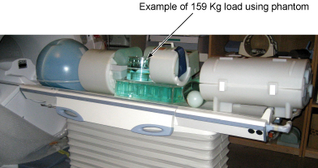

Hydraulic Filter Replacement
Prerequisites
Overview
Perform the following procedure once each year to maintain smooth, responsive operation of the patient transport hydraulics.
1 Remove Hydraulic Filter
Procedure
- Undock table and remove from magnet room.
- Raise patient transport table to highest elevation with Up foot pedal.
- Remove patient transport side covers on right side (when facing magnet enclosure).
- Lower the safety latch by disconnecting spring from scissors
assembly (see Figure 1).
Figure 1. LOWERING SAFETY LATCH

- Release hydraulic pressure by gently pressing Down foot pedal until table is supported by safety latch.
- Place absorbent material or a drip pan on the floor under the cylinder block are to catch any dripping of oil.
- Raise patient transport table with UP foot pedal (3 or 4 pumps)
until table support bar is out of the way. This provides enough clearance
to get a 13/16" wrench onto high pressure hose fitting (see Figure 2).
Figure 2. LOCATION OF HYDRAULIC FILTER

- Turn wrench only enough to loosen the hose fitting initially, but not to let any oil leak out. Then lower the table using the Down foot pedal until table is again supported by safety latch.
- Remove high-pressure hose from adapter. A small amount of oil will spill out of hose during removal; raise hose as high as possible to limit oil spillage.
- Remove filter cap from filter using two 3/4" wrenches (see Figure 3).
Figure 3. REMOVE FILTER ELEMENT

- Remove dirty oil from top of filter.
- Remove gasket and filter element from filter body and throw away.
note:
Equipment damage possibility. Do not damage gasket with wrench during disassembly, if reusing old gasket. It is better to replace gasket with a new one, to prevent oil from leaking.
2 Install Replacement Hydraulic Filter
Procedure
- Clean outside threads (both ends) of filter body with a clean cloth.
- Clean interior threads of filter cap with a clean cloth.
- Install new filter element (46-230889P1), hole end down, in filter body.
- Install filter cap and new gasket (46-230889P2) onto filter body. Ensure that new gasket seats properly before tightening with wrench.
- Reconnect high-pressure hose to cylinder block. Tighten by hand, then raise the table with Up foot pedal to allow clearance for wrench; tighten hose fitting securely.
- Raise table with several pumps on the Up foot pedal and check for oil leaks. If leaks occur, tighten connections snugly, but do not over tighten; brass fittings will deform if over tightened.
- Proceed to Bleeding Patient Transport Hydraulics.
note:
Equipment damage possibility. When reassembling filter cap, use care not to damage gasket; ensure that gasket is properly seated before tightening with wrench. If gasket is deformed, oil will leak out of this connection when reassembled.
3 Finalization
Procedure
- Dock the Table and move the Table to the up limit position. Verify that the Table and Bridge are horizontally aligned and there is no height difference of Table and Bridge at right and left position.
- Verify that there is no part caught by wire or any movable module.
- Place the 159Kg Load evenly on the Cradle. If using the phantom,
refer to the following illustration.
Figure 4. 159Kg Load

- Verify that Table moves up and down fully and smoothly using the pedal of Table.
- Verify that Table moves up and down fully and smoothly using the pedal of Dock.
- Verify that Cradle moves in and out fully and smoothly.
- Verify that the amount of oil is properly filled.
- Verify that oil is not leaked from the cylinder. Refer to following
illustration for check points.
Figure 5. Oil Leak Check

- Verify that all of the parts and the screws are installed.
- Verify that there is no wound or dirt on the Table, Cradle, Pad, and Patient Strap.